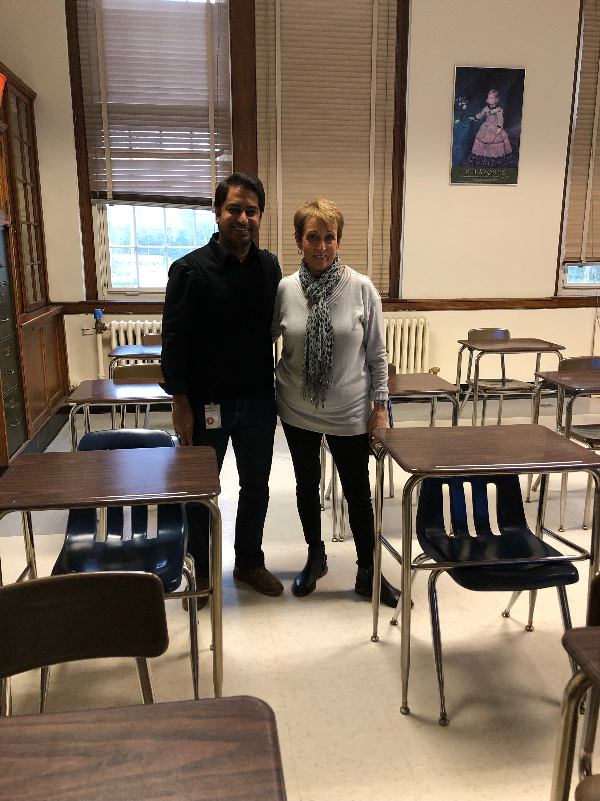
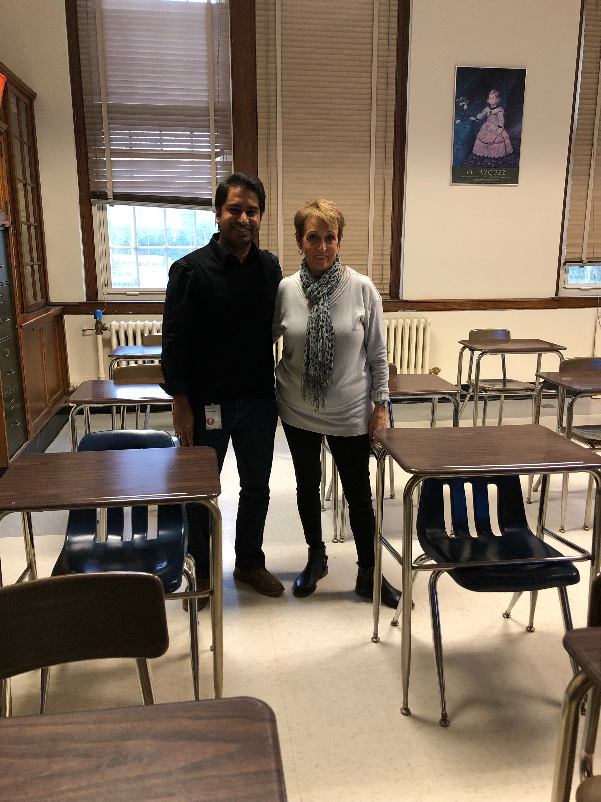

For the last four years, I coached the JV and Varsity B Girls Soccer team. Below, you can find a few examples of my training plans for an agility session. During the 2021-2022 academic year, I also helped coach the Varsity B Boys Tennis team with Greg Leong.

 
